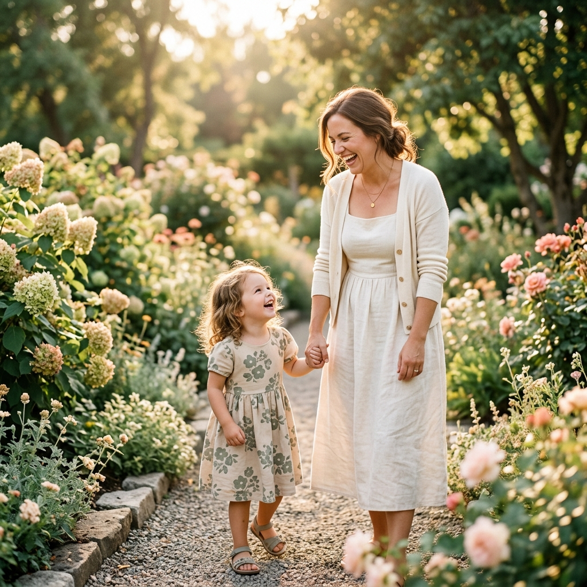
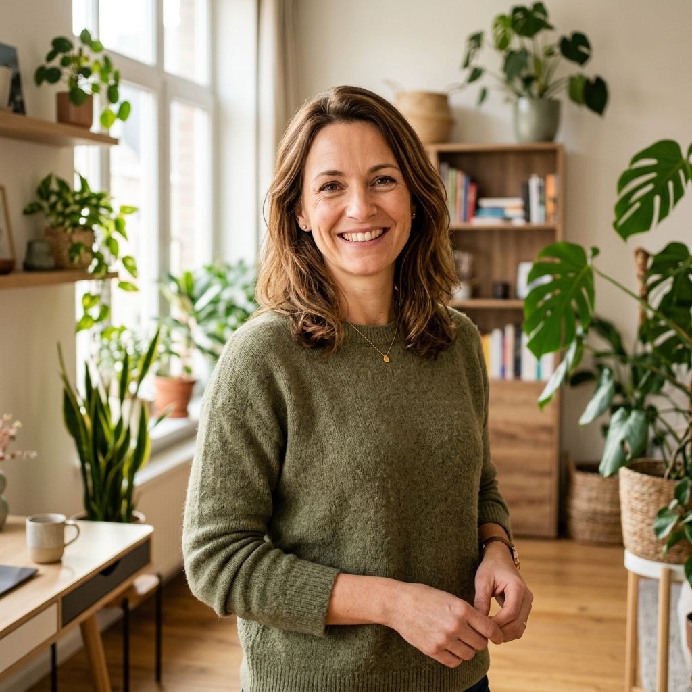

Soutenir les parents, accompagner les enfants, créer plus d'espoir.
Une ASBL dédiée aux parents d'enfants porteurs de handicap, avec une approche humaine, bienveillante et proche des familles.
Nous aidons les parents d'enfants avec un handicap. Nous écoutons et soutenons votre famille à Bruxelles.

familles soutenues
Notre mission
Nous accompagnons les parents d'enfants porteurs de handicap dans leur parcours quotidien, avec écoute, soutien, information et présence humaine. Notre objectif est de ne laisser aucune famille seule face aux difficultés.
Notre but est simple : vous aider dans votre vie de tous les jours.
- Nous vous écoutons sans vous juger.
- Nous vous aidons pour les papiers administratifs.
- Nous vous proposons des moments de repos.
Écoute & orientation
Un espace bienveillant pour déposer vos craintes, vos questions, et être orienté vers les bons professionnels et institutions de soins.
Soutien aux parents
Des ateliers pratiques et des conseils pour vous aider à surmonter les démarches administratives, médicales et le quotidien souvent lourd.
Sensibilisation au handicap
Parce que le regard de la société doit changer, nous sensibilisons les écoles, les institutions et le grand public pour plus d'inclusion.
Vous êtes...
Notre ASBL propose des réponses personnalisées et des opportunités d'engagement pour chacun.
Un parent / Une famille
Trouvez une écoute attentive, des conseils administratifs, un soutien moral, notre halte-accueil de répit ou nos groupes de parole pour ne plus être seuls face au handicap.
Demander un soutienUn parrain / Un bénévole
Offrez quelques heures par mois de votre temps pour parrainer un enfant en situation de handicap, animer des sorties, ou offrir un moment de répit à ses parents.
Devenir parrainUn donateur / Une entreprise
Soutenez directement nos actions gratuites auprès des familles bruxelloises. Vos dons ouvrent droit à une déduction fiscale de 45% en Belgique dès 40€/an.
Faire un donComment nous vous soutenons
Chaque situation est unique. Nous proposons un accompagnement sur mesure pour favoriser l'inclusion et le répit des familles.
Accompagnement des parents
Une écoute personnalisée, à domicile ou dans nos locaux, pour surmonter les moments de doute et de fatigue.
Halte-accueil « La Récré »
Un espace de répit sécurisé pour les enfants de 0 à 6 ans, permettant aux parents de s'offrir du temps pour souffler.
Groupes de parole
Un espace sécurisant et chaleureux pour échanger avec d'autres parents de Bruxelles vivant des situations similaires.
Activités de répit et loisirs
Des événements ludiques et culturels adaptés (stages, sorties) pour favoriser les rencontres et le lien social.
Aide à l'inclusion scolaire
Accompagnement et conseils pour l'orientation scolaire, la reconnaissance du handicap et l'intégration en école spécialisée ou ordinaire.
Soutien administratif complet
Une aide concrète pour obtenir vos aides financières belges (allocations familiales supplémentaires, reconnaissance handicap).

Mot de la fondatriceUne ASBL née d'un engagement profond
"Chaque enfant mérite d'être accompagné avec dignité. Chaque parent mérite de trouver une main tendue pour ne pas sombrer sous le poids du quotidien."
Derrière cette ASBL, il y a une histoire vécue, proche des familles et consciente des défis immenses que rencontrent les parents d'enfants porteurs de handicap. Ce projet est né d'une volonté simple : apporter plus de soutien, plus d'écoute et plus de dignité aux familles belges.
Nous savons que le chemin est long et parfois parsemé d'obstacles administratifs ou de solitude. Sonia ASBL a été créée pour être ce havre de bienveillance et de solidarité concrète.
Des actions concrètes
Chaque chiffre représente une famille, un parent écouté, ou un sourire retrouvé. Nous grandissons chaque jour grâce à votre solidarité.
Ce que disent les parents
Ils nous accordent leur confiance et partagent leur vécu au sein de notre communauté.
"Enfin un espace chaleureux et sans jugement où l'on se sent réellement écouté et compris dans nos difficultés quotidiennes."
"Un soutien précieux et concret pour les parents qui se sentent parfois extrêmement isolés face aux démarches scolaires."
"Une initiative profondément humaine, nécessaire et porteuse d'espoir pour l'avenir de nos enfants en Belgique."
Des réponses à vos questions
Vous vous posez des questions sur le fonctionnement de Sonia ASBL ? Voici quelques réponses. Pour toute autre demande, contactez-nous directement.
Le premier contact se fait généralement par téléphone, WhatsApp ou e-mail. Nous planifions ensuite une rencontre simple et informelle chez vous ou dans nos bureaux pour faire connaissance, sans aucune démarche contraignante.
Non. L'ensemble de nos services d'écoute, d'orientation administrative et de participation aux groupes de parole est entièrement gratuit pour les familles. L'ASBL fonctionne grâce aux dons et aux subventions.
Oui. Sonia ASBL soutient les parents d'enfants présentant tout type de handicap (physique, mental, sensoriel, maladies rares, troubles autistiques ou TDAH). Nous croyons que les défis parentaux ont une résonance commune.
Vous pouvez soutenir notre mission de plusieurs manières : en faisant un don financier (déductible des impôts dès 40€/an), en devenant bénévole pour nous aider lors d'activités de répit, ou simplement en partageant notre message autour de vous.